Overview
In data visualization, a “glyph” is a small graphical object, such as a shape, icon, or marker, that represents a single observation. Glyphs are used to visualize multidimensional data by encoding different variables into various visual attributes like shape, size, color, and orientation. The use of “glyphs” to represent multivariate data has a long history (Ward, 2008). One of the early uses, by Edgar Anderson (1957), used circular glyphs with rays to study botanical species, including the famous Iris Flowers (Kleinman, 2002). More recently, Chernoff (1973) introduced the use of schematic faces that could represent up to 15 data variables simultaneously.
The penguinglyphs package is an experiment in the use of
glyphs to represent the observations in the datasets on Penguins in
Antartica, now in the R datasets datasets::penguins. The
first step was to see how Penguin features, like body mass, flipper
length and the length and depth of their bills could be represented
parametrically, and thus encoded in ways to permit
drawing a penguin observation using R graphics like
polygon(), segments() and so forth.
Installation
# Install from GitHub
devtools::install_github("friendly/penguinglyphs")Visual Encoding
The package uses the following mappings:
- Bill length → horizontal extent of the bill
- Bill depth → vertical thickness of the bill
- Flipper length → length of the flippers
- Body mass → area of the body
- Species → body color (Adelie=orange, Chinstrap=purple, Gentoo=green)
- Sex → eye shape (angular for males, round for females)
Each measurement is converted to a scale factor between 0.7 and 1.3,
according to where it falls in the range of that variable in the full
penguins dataset. The vignette How to Draw a
Penguin shows how the glyph is constructed, and what each of these
features looks like over its range.
Basic Usage
First, let’s load the Palmer Penguins dataset:
# Load penguin data
data(penguins, package = "datasets")
# Look at the structure
head(penguins)
#> species island bill_len bill_dep flipper_len body_mass sex year
#> 1 Adelie Torgersen 39.1 18.7 181 3750 male 2007
#> 2 Adelie Torgersen 39.5 17.4 186 3800 female 2007
#> 3 Adelie Torgersen 40.3 18.0 195 3250 female 2007
#> 4 Adelie Torgersen NA NA NA NA <NA> 2007
#> 5 Adelie Torgersen 36.7 19.3 193 3450 female 2007
#> 6 Adelie Torgersen 39.3 20.6 190 3650 male 2007Creating a Grid of Glyphs
The main function is penguin_glyphs(), which creates a
grid display, 5 columns wide by default. Here, I show the first five
penguins of each species.
# Visualize first 5 penguins in each species
which <- outer(1:5, c(0, 152, 277), FUN ="+") |> c()
penguin_glyphs(penguins[which,])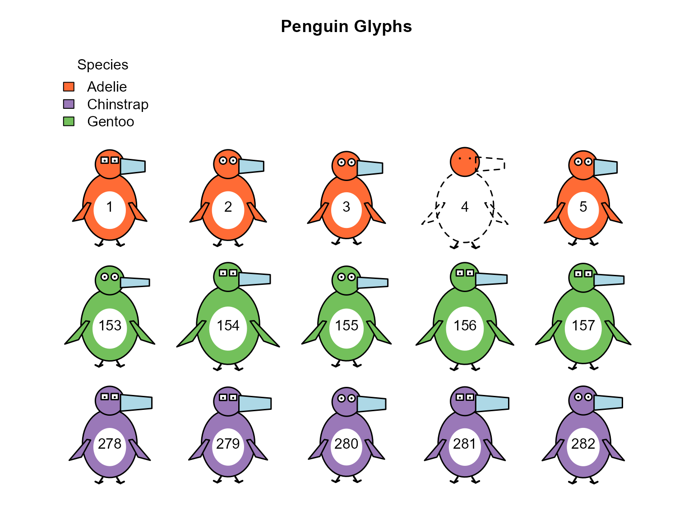
Glyphs for the first five penguins in each species
What happened with case 4? All of its measurements are missing
(NA), so the glyph is drawn only as a dashed outline.
Henceforth, I’ll work with the subset, peng, of the 333
penguins that have no missing values.
The row names are used as the labels in the glyphs.
na.omit() keeps the original ones, which then have gaps
where penguins were dropped; resetting them numbers the complete cases
from 1 to 333. This matters for identifying particular penguins.
peng is then the same as the dataset
heplots::peng, apart from the names of some variables, so
the case numbers shown here are the same as those in analyses of that
dataset, as in Friendly (2024).
Random Sample
set.seed(42)
sampled_rows <- sample(1:nrow(peng), size = 20)
penguin_glyphs(peng[sampled_rows, ], main = "Random Sample of Penguins")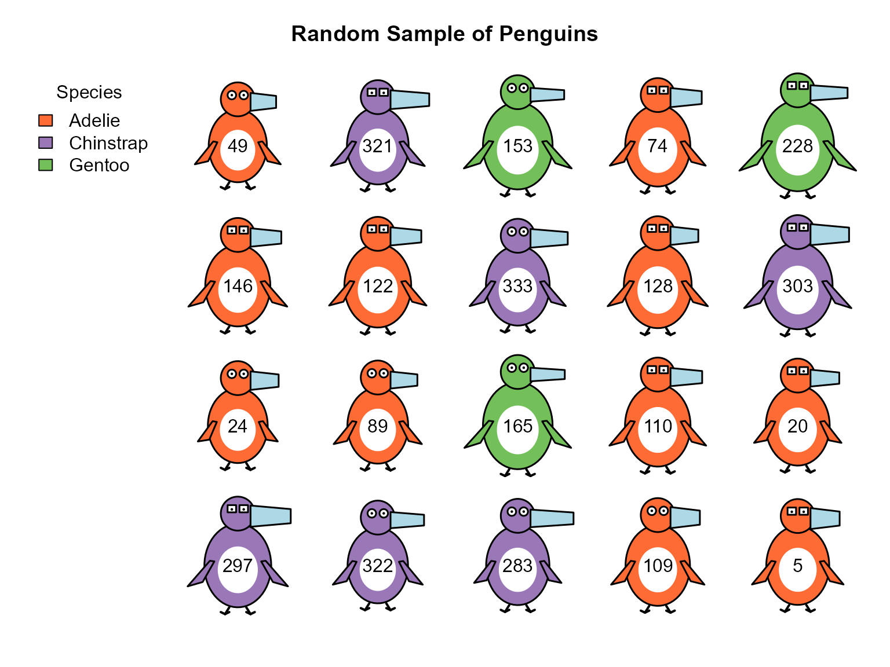
Drawing Individual Penguins
For more control, you can draw individual penguins with
draw_penguin():
# Create plot area
plot(1, xlim=c(0,4), ylim=c(0,2), type="n", asp=1,
xlab="", ylab="", main="Species Comparison")
# Draw one of each species; size is the height of the glyph, in inches
draw_penguin(1, 1, species="Adelie", sex="male", id="Adelie", size = 1.5)
draw_penguin(2, 1, species="Chinstrap", sex="female", id="Chinstrap", size = 1.5)
draw_penguin(3, 1, species="Gentoo", sex="male", id="Gentoo", size = 1.5)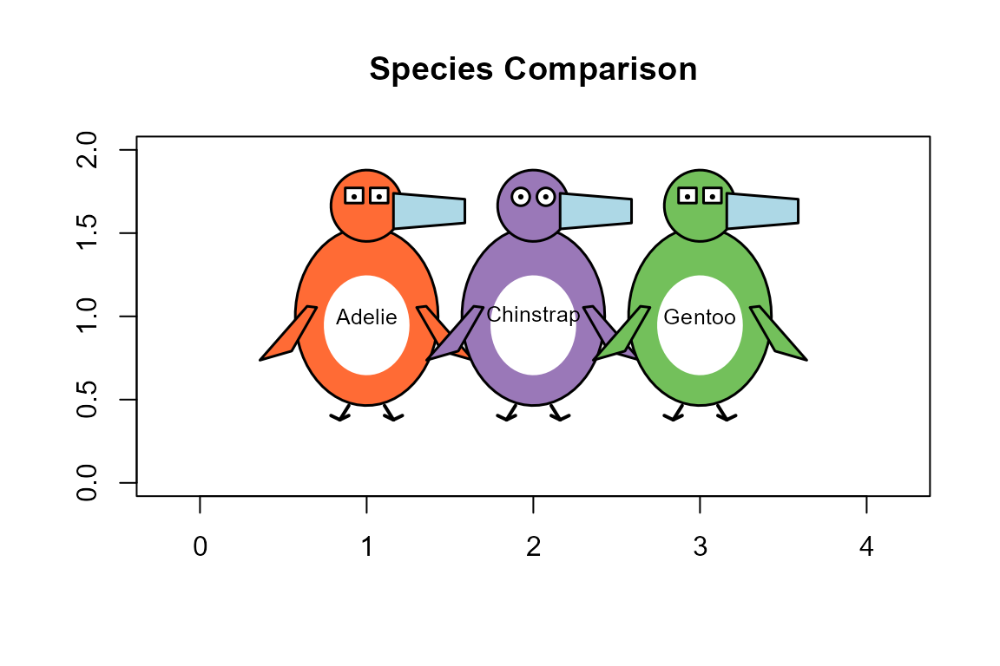
Glyphs in Other Plots
A glyph is sized in inches rather than in the units of the axes, so
it has the same shape and size in any plot, in the same way as a
plotting symbol. penguin_points() uses this to add a glyph
for each row of a data frame at given coordinates in an existing plot,
as points() does for ordinary symbols.
penguin_legend() adds a legend for the species.
Here, the glyphs for a sample of 40 penguins are the points in a scatterplot of body mass against flipper length. The glyphs repeat what the axes show, in that penguins toward the right have longer flippers and those toward the top have larger bodies, but they also show the bill and the sex of each penguin.
set.seed(42)
show <- sample(nrow(peng), 40)
samp <- peng[show, ]
plot(body_mass ~ flipper_len, data = samp, type = "n",
xlab = "Flipper length (mm)", ylab = "Body mass (g)")
penguin_points(samp$flipper_len, samp$body_mass, samp)
penguin_legend("topleft", samp$species)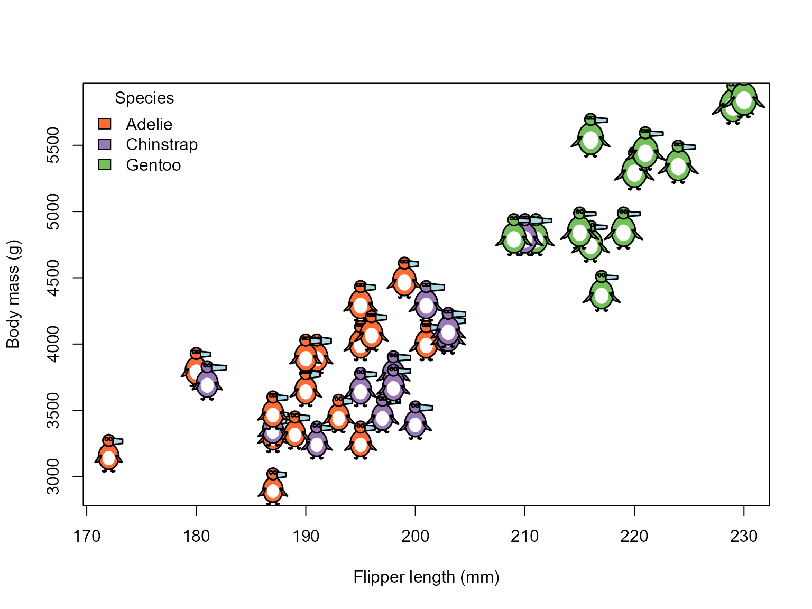
Penguin glyphs as the point symbols in a scatterplot
The coordinates need not be variables in the data. A more useful display puts the glyphs in the space of the first two principal components, so that position summarizes all four measurements, and the glyph shows what lies behind it.
pca <- prcomp(peng[, 3:6], scale. = TRUE)
plot(pca$x[, 1:2], type = "n", asp = 1)
penguin_points(pca$x[show, 1], pca$x[show, 2], samp)
penguin_legend("top", samp$species, horiz = TRUE)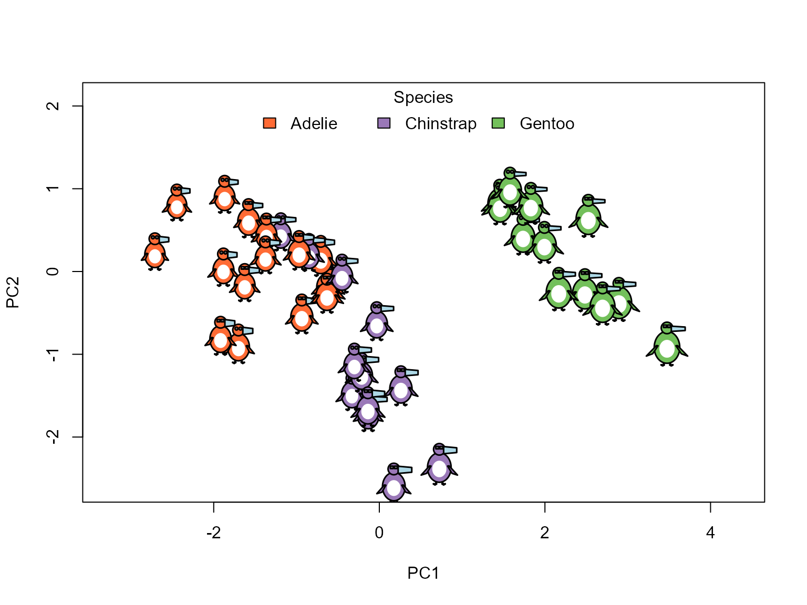
Penguin glyphs in the space of the first two principal components
Finding Patterns
Examining Outliers
Unusual multivariate cases are easily identified using Mahalanobis
.
Here, I find the three most noteworthy observations in the total sample
(ignoring species).
library(heplots)
#>
#> Attaching package: 'heplots'
#> The following object is masked _by_ '.GlobalEnv':
#>
#> peng
DSQ <- heplots::Mahalanobis(peng[, 3:6])
outliers <- order(DSQ, decreasing = TRUE)[1:3] |>
print()
#> [1] 283 10 35You can see them in a QQ plot of the quantiles of the values against what they would be in a multivariate normal distribution for four variables.
clr <- c(Adelie = "#F37A00", Chinstrap = "#6A3D9A", Gentoo = "#33a02c")
pch <- c(19, 17, 15) # ggplot symbol defaults for a factor
out <- heplots::cqplot(peng[, 3:6],
id.n = 3,
col = clr[peng$species],
pch = pch[peng$species],
ref.col = "grey",
what = "Penguin numeric variables",
cex.lab = 1.25)
out
#> DSQ quantile p
#> 283 27.75861 17.56363 0.001501502
#> 10 13.32300 15.09685 0.004504505
#> 35 12.35209 13.93437 0.007507508What makes these penguins unusual? Their glyphs are labeled with the same case numbers as in the QQ plot.
# Look at some notable peng
penguin_glyphs(peng[outliers,], ncol=3, main = "Notable Penguins")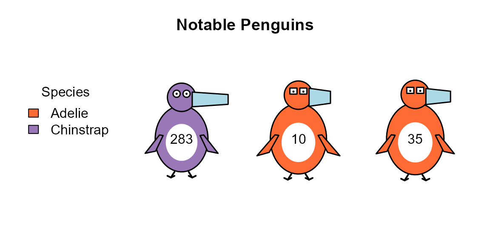
It also helps to see where they are in relation to the rest. Here, all the penguins are shown as small points in plots of the principal components, and only the three outliers are drawn as glyphs.
The plot of the first two components, which account for most of the variance, is the one usually looked at. But none of the three is at all unusual there. Multivariate outliers tend to show up instead in the dimensions with the smallest variance (Friendly, 2024): these are the directions in which the data vary least, so a penguin that departs from the pattern of correlations among the variables stands out. In the plot of the last two components, all three are on the periphery: penguins 283 and 10 are at opposite ends of the third dimension, and 35 is at the top of the fourth.
op <- par(mfrow = c(1, 2), mar = c(4, 4, 2, 1))
for (dims in list(1:2, 3:4)) {
plot(pca$x[, dims], asp = 1, pch = 16, cex = 0.7,
xlim = extendrange(pca$x[, dims[1]], f = 0.15), # room for the glyphs
col = penguin_colors()[as.character(peng$species)],
main = paste("Dimensions", dims[1], "and", dims[2]))
penguin_points(pca$x[outliers, dims[1]], pca$x[outliers, dims[2]], peng[outliers, ],
size = 0.7, id = TRUE)
}
penguin_legend("bottomright", peng$species)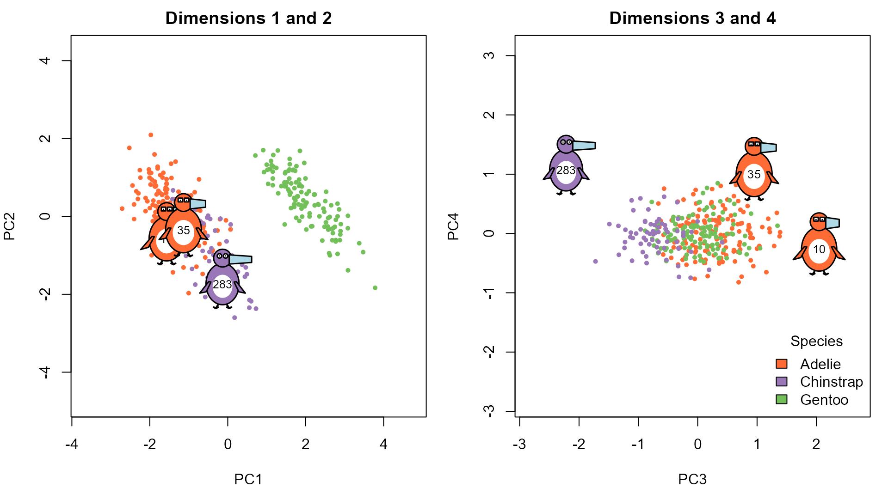
The three most unusual penguins, shown as glyphs in plots of the first two principal components (left) and the last two (right).
par(op)Visual Lineup
A “line-up” test (Buja et al., 2009) has been proposed as a human significance test: Can an observer spot a difference that rejects a null hypothesis? This is more a test of a data visualization per se than of the human observer.
Here, the idea is turned around, to ask whether the unusual penguins can be picked out from their glyphs alone. The display shows 17 penguins chosen at random, together with the three outliers found above, in a random order.
# Create a lineup for visual inference
set.seed(123)
cast <- c(sample(1:nrow(peng), size = 17), outliers)
lineup <- sample(cast, size = length(cast))
penguin_glyphs(peng[lineup,], main = "Can you spot the outliers?")
The outliers are peng 283, 10, 35. If you can’t find them without the labels, that says something about how well these glyphs convey what makes a penguin unusual in four dimensions, which need not be an extreme value on any one of them, as the principal component plots showed.
Customization
Legend Placement
The legend is placed outside the grid of glyphs, at the top left by default. You can put it on another side, or lay it out horizontally.
penguin_glyphs(peng[sampled_rows, ],
main = "Custom Legend",
legend = list(loc = "bottom", horiz = TRUE))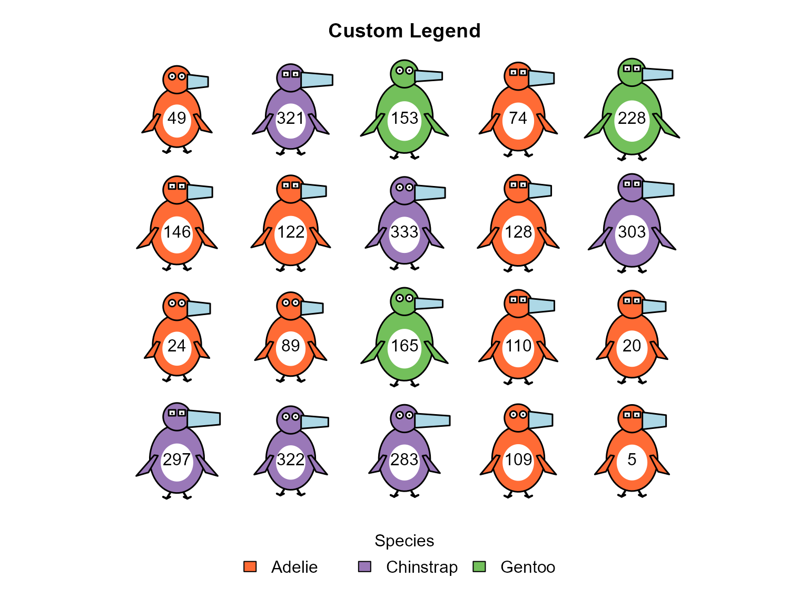
Scaling
By default, the size of each feature reflects where a penguin falls
in the range of the whole dataset, so a penguin looks the same
whichever others it is shown with. The ref argument changes
the reference data. With ref = data, the features are
scaled to the ranges in just the penguins being plotted, which
exaggerates the differences among them. Compare the three outliers,
scaled in each way.
penguin_glyphs(peng[outliers,], ncol = 3, main = "Scaled to all peng")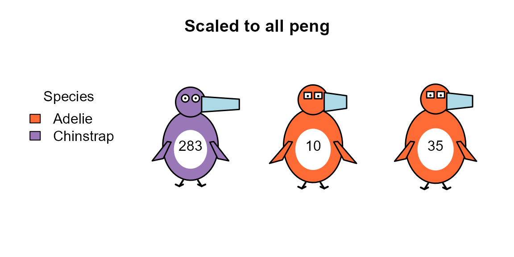
penguin_glyphs(peng[outliers,], ncol = 3, main = "Scaled to these three",
ref = peng[outliers,])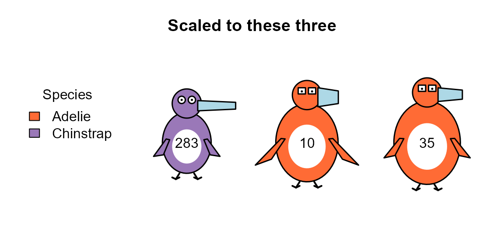
Label Size
cex.lab controls the size of the labels in the
glyphs.
penguin_glyphs(peng[sampled_rows, ], cex.lab = 0.7, main = "Smaller labels")Different Grid Layouts
# Fewer columns for a wider display
penguin_glyphs(head(peng, 15),
ncol = 8,
main = "Wide Layout")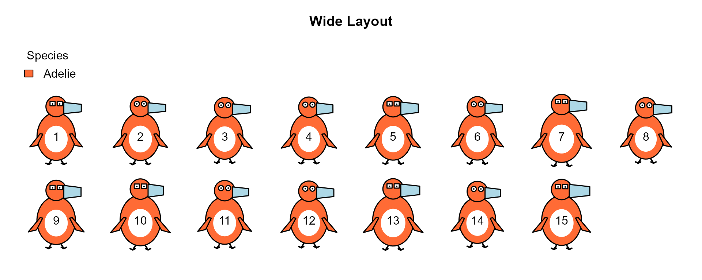
Interpreting the Glyphs
When looking at penguin glyphs, the features are not all equally easy to read:
- Species is identified immediately, by color.
- Body mass is the most conspicuous of the measurements: a heavier penguin has a larger body.
- Bill proportions: length and depth are read together, as long, thin bills vs. short, deep bills.
- Flipper length: longer flippers extend further from the body, but the differences are modest.
- Sex: the difference in eye shape is consistent, but subtle, and hard to see when the glyphs are small.
In the displays above, this is enough to see species-specific morphology, such as the large bodies, long flippers and thin bills of the Gentoos. Differences among the penguins of one species, including those between males and females, are harder to see.
Conclusion
The penguinglyphs package is an experiment in using a
glyph that is a schematic picture of the thing that was measured, so
that the mapping of variables to visual features does not have to be
learned. It provides a grid display of glyphs for a set of penguins, and
glyphs that can be used as the points in any other plot.
Some possible uses are:
- Exploratory data analysis, particularly in combination with a dimension-reduction plot
- Showing what makes multivariate outliers unusual
- Teaching ideas of visual encoding, and how to evaluate one
Whether such glyphs work better than more abstract ones, like stars or Chernoff faces, remains to be tested.